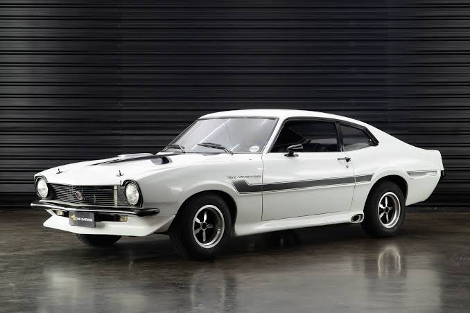

!DOCTYPE html>
Carros Clássicos
Carros Clássicos
Vamos falar sobre lendas antigas, carros clássicos nacionais e internacionais, eventos e encontros das décadas de 70, 80 e 90.
A História do Grande Ícone Brasileiro - Chevrolet Opala SS

O Nascimento de uma Lenda
Na década de 1970, o cenário automotivo brasileiro fervilhava, mas o público jovem buscava carros esportivos e marcantes. Em novembro de 1971, a Chevrolet lançou o Opala SS (Super Sport), que rapidamente conquistou os apaixonados por velocidade.
Em 1972 surgiu a famosa versão cupê de duas portas, considerada até hoje uma das mais bonitas da história da indústria automobilística brasileira. Seu visual esportivo, aliado ao desempenho e ao ronco característico do motor, transformou o Opala SS em um verdadeiro ícone nacional.
O Puro Muscle Car Americano no Brasil - Ford Maverick GT V8

A Resposta da Ford ao Mercado Esportivo
Lançado em 1973, o Ford Maverick GT V8 chegou ao Brasil trazendo o poderoso motor 302 V8. Seu desempenho, o ronco inconfundível e o visual inspirado nos muscle cars americanos fizeram dele um dos carros mais desejados da época.
O Maverick GT tornou-se o principal rival do Opala SS, protagonizando disputas memoráveis nas pistas e conquistando milhares de fãs. Atualmente, é um dos clássicos mais valorizados pelos colecionadores brasileiros.
Por que os carros clássicos fazem tanto sucesso?
Os carros antigos representam uma época em que o design, o som dos motores e a experiência ao volante eram únicos. Além do valor histórico, muitos modelos se tornam verdadeiros investimentos para colecionadores e apaixonados pelo automobilismo.
Encontros de carros antigos acontecem em várias cidades do Brasil e reúnem famílias, colecionadores e admiradores que compartilham histórias e preservam essas máquinas incríveis.